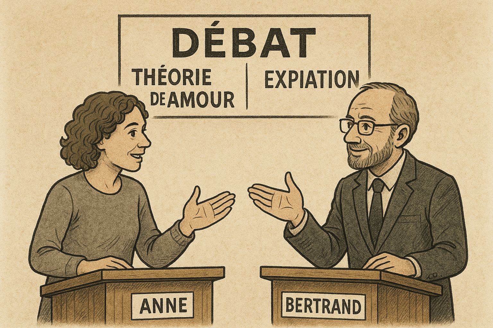

7.11.5 Débat fictif
La doctrine de l’expiation par le sang de Christ est l’idée générale que la condition objective indispensable du pardon de nos péchés c’est la mort sanglante de Jésus, que Dieu ne pouvait pas pardonner les péchés des hommes sans l’expiation préalable des dits péchés par le moyen des souffrances et dela mort volontairement acceptées par Jésus à la place et pour l’amour de l’humanité coupable1. Cela peut se comprendre de différentes manières : par un sacrifice, par une offrande d’amour, par une victoire sur le mal, etc. En d’autres termes, c’est le concept global : « Jésus est mort pour nos péchés ». La substitution pénale est une théorie précise de l’expiation.
Au début du XXᵉ siècle, le protestantisme romand était traversé par de vives discussions théologiques.
En 1913, lors du Congrès du progrès religieux tenu à Paris, le théologien suisse Louis Emery présenta un rapport sur l’évolution des idées religieuses en Suisse romande. Ses propos furent ensuite publiés dans la Gazette de Lausanne. Il y constatait que beaucoup de pasteurs ne prêchaient plus certains dogmes classiques tels que la Trinité, les peines éternelles ou l’expiation comprise comme un sacrifice sanglant. Selon lui, la foi se réorientait davantage vers une compréhension morale et spirituelle de la rédemption, centrée sur l’humanité de Jésus-Christ et sur la puissance transformatrice de son enseignement.
Ces affirmations provoquèrent une réaction immédiate. Plusieurs pasteurs évangéliques suisses publièrent une réponse collective, réaffirmant leur attachement au « vieil Évangile » : celui de la croix comprise comme sacrifice expiatoire, nécessaire pour le pardon des péchés. Cette controverse mit en lumière la fracture qui traversait alors le protestantisme romand : d’un côté un courant théologique moderne, influencé par la critique historique et soucieux de repenser les dogmes à la lumière de la conscience religieuse contemporaine ; de l’autre, un courant évangélique attaché à la fidélité stricte aux doctrines traditionnelles de la foi.
C’est dans ce contexte qu’Emery publia en 1914, dans la Revue de Théologie et de Philosophie, un long article intitulé La doctrine de l’expiation et l’Évangile de Jésus-Christ12. Ce texte prolonge sa prise de position au cœur du débat. Emery y défend une conviction profonde : la doctrine de l’expiation, comprise comme la nécessité d’un sacrifice sanglant pour apaiser la colère divine, n’appartient ni à l’enseignement de Jésus ni à l’essence du christianisme. Selon lui, la croix doit être comprise autrement : comme une révélation de l’amour divin et un appel à la repentance, plutôt qu’une transaction juridique exigée par Dieu.
Ses arguments sont à la fois historico-bibliques (elle ne correspond pas au témoignage de l’Écriture) et dogmatiques (elle est incohérente avec la nature de Dieu et du salut). Je vous encourage à lire l’article en entier12.
Débat fictif:
Imaginons un débat fictif entre Anne en faveur de l’hypothèse de la révélation de l’amour de Dieu (qui reprend principalement les arguments de Louis Emery tout en ajoutant quelques éléments personnels) et Bertrand, un défenseur de la substitution pénale afin de bien comprendre les arguments de chacun. Ce dialogue imaginaire met en scène les principales objections formulées par Louis Emery contre la substitution pénale (certaine fois j’ai repris tel quel ses arguments sans pour autant utilisé de guillemets afin de garder l’idée d’un dialogue), avec les réponses typiques d’un défenseur de la substitution pénale, suivies des contre-arguments d’Emery.

Arguments biblico-historiques #
1. Le pardon dans l’Ancien Testament
Anne : Dans l’Ancien Testament, le pardon pouvait être accordé directement par Dieu sans qu’un sacrifice sanglant soit exigé. La condition première du pardon est la repentance et la prière (cf section 7.11.2).
2 Chroniques 7:14 : « Si mon peuple sur qui est invoqué mon nom s’humilie, prie, et cherche ma face, et s’il se détourne de ses mauvaises voies, je l’exaucerai des cieux, je lui pardonnerai son péché, et je guérirai son pays. »
Psaume 32:5 : « Je t’ai fait connaître mon péché, je n’ai pas caché mon iniquité; J’ai dit: J’avouerai mes transgressions à l’Éternel! Et tu as effacé la peine de mon péché. »
Psaume 51:18-19 : « Tu ne prends point plaisir aux sacrifices, autrement j’en donnerais; Tu n’agrées point d’holocauste. Les sacrifices qui sont agréables à Dieu, c’est un esprit brisé: Ô Dieu! tu ne dédaignes pas un cœur brisé et contrit. »
Ésaïe 55:7 : « Que le méchant abandonne sa voie, Et l’homme d’iniquité ses pensées; Qu’il retourne à l’Éternel, qui aura pitié de lui, À notre Dieu, qui ne se lasse pas de pardonner. »
Ézéchiel 18:21-23 : « Si le méchant revient de tous les péchés qu’il a commis, qu’il garde toutes mes lois et pratique la droiture et la justice, il vivra, il ne mourra pas. Toutes les transgressions qu’il a commises seront oubliées; il vivra à cause de la justice qu’il a pratiquée. Ce que je désire, est-ce la mort du méchant? dit le Seigneur, l’Éternel. N’est-ce pas qu’il change de conduite et qu’il vive? »
Anne : Tu cites Hébreux 9:22 — « sans effusion de sang, il n’y a pas de pardon ». Mais il faut regarder le contexte précis :
Hébreux 9:22 : « Et presque tout, d’après la loi, est purifié avec du sang, et sans effusion de sang il n’y a pas de pardon. »
L’auteur dit bien « presque tout », ce qui implique des exceptions. Et effectivement, dans la Loi de Moïse, il existait des situations où le pardon était accordé sans sacrifice sanglant :
Lévitique 5:11-13 : « S’il n’a pas les moyens d’offrir deux tourterelles ou deux jeunes pigeons, il apportera en offrande, pour le péché qu’il a commis, un dixième d’épha de fleur de farine en sacrifice d’expiation… Le sacrificateur en prendra une poignée comme mémorial et la brûlera sur l’autel… Ainsi le sacrificateur fera pour lui l’expiation du péché qu’il a commis à l’un de ces titres, et il lui sera pardonné. »
Ici, pas de sang, seulement de la farine, et pourtant Dieu pardonne. Cela montre que le sang n’était pas une condition absolue, mais une règle rituelle adaptée la plupart du temps.
Et même sans sacrifice, Dieu pouvait pardonner quand il voyait un véritable retour du cœur. Un exemple frappant est celui de Ninive : les habitants, avertis par Jonas, se repentent par le jeûne et la prière — aucun sacrifice n’est mentionné — et Dieu leur fait grâce (Jonas 3:5-10).
De plus, les prophètes rappellent que Dieu ne se satisfait pas d’un simple rite sanglant : ce qui compte, c’est la sincérité du cœur.
Psaume 51:18-19 : « Tu ne prends point plaisir aux sacrifices, autrement j’en donnerais; Tu n’agrées point d’holocauste. Les sacrifices qui sont agréables à Dieu, c’est un esprit brisé: Ô Dieu! tu ne dédaignes pas un cœur brisé et contrit. »
Osée 6:6 : « Car j’aime la piété et non les sacrifices, Et la connaissance de Dieu plus que les holocaustes. »
Michée 6:6-8 : « Avec quoi me présenterai-je devant l’Éternel… L’Éternel agréera-t-il des milliers de béliers? (…) On t’a fait connaître, ô homme, ce qui est bien; Et ce que l’Éternel demande de toi, c’est que tu pratiques la justice, que tu aimes la miséricorde, et que tu marches humblement avec ton Dieu. »
Tout cela montre que, pour Dieu lui-même, le pardon n’a jamais été lié mécaniquement au sang versé. Les sacrifices servaient de pédagogie visuelle pour rappeler la gravité du péché, mais la vraie condition du pardon était et reste le retour sincère du cœur vers Dieu.
2. Jésus pardonne avant la croix
Anne : Jésus lui-même pardonne directement les péchés à plusieurs occasions.
- Au paralytique de Capernaum : « Mon enfant, tes péchés sont pardonnés » (Mc 2:5).
- À la pécheresse dans la maison de Simon le pharisien : « Tes péchés sont pardonnés » (Lc 7:48).
- À la femme adultère : « Je ne te condamne pas non plus; va, et ne pèche plus » (Jn 8:11).
→ Dans aucun de ces cas, Jésus ne dit que le pardon dépendra de sa mort future.
Anne : Rien, ni dans les textes ni dans leurs contextes, ne permet de supposer que ce pardon était accordé en prévision de la mort expiatoire future de Jésus. Si tel avait été le cas, on peut se demander : au vu de l’importance d’un tel point, pourquoi Jésus ne l’aurait-il pas clairement annoncé de son vivant ?
Certes, il a prédit à plusieurs reprises sa passion et sa mort. Mais ces annonces évoquent principalement son rejet, sa souffrance et sa résurrection (Mc 8:31 ; 9:31 ; 10:33-34). Comment se fait-il qu’il n’ait jamais enseigné à ses disciples que sa mort serait nécessaire pour l’expiation et la rémission des péchés de l’humanité ? Une telle annonce aurait changé leur regard : ils auraient compris et accepté la croix au lieu d’être bouleversés et surpris, comme ce fut le cas.
Les évangiles montrent donc que Jésus pardonne parce qu’il en a l’autorité divine. Il révèle que le pardon est gratuit, offert à celui qui croit et se repent. Introduire une condition future pour expliquer ces pardons, c’est projeter dans les textes une interprétation qu’ils ne portent pas en eux.
3. La doctrine de l’expiation est contraire à l’enseignement de Jésus
Anne : Non seulement Jésus n’a jamais présenté sa mort comme une condition nécessaire au pardon, mais en plus la doctrine de l’expiation entre en contradiction avec son propre enseignement : ses paraboles en particulier insistent sur un pardon offert gratuitement, fondé sur la compassion du Père plutôt que sur un paiement ou une substitution.
- Lc 15:11-32 (la parabole du fils prodigue) : Un fils quitte son père, gaspille son héritage et finit dans la misère. Reconnaissant ses erreurs, il décide de revenir humblement demander pardon. Ému de compassion, le père l’accueille, lui pardonne et le restaure dans sa dignité de fils.
- Mt 18:23-35 (la parabole du serviteur impitoyable) : Un roi décide de régler ses comptes avec ses serviteurs. L’un d’eux lui doit une somme énorme qu’il est incapable de rembourser. Le roi ordonne de le vendre, lui et sa famille, mais le serviteur supplie et implore sa patience. Ému de compassion, le roi lui remet toute sa dette. Peu après, ce même serviteur rencontre un compagnon qui lui doit une petite somme. Il l’étrangle et exige le remboursement immédiat. Son compagnon supplie à son tour, mais le serviteur refuse et le fait jeter en prison. Quand le roi apprend ce qui s’est passé, il se met en colère : il rappelle le serviteur, annule le pardon et le livre aux bourreaux, car il n’a pas su montrer la même compassion qu’il avait reçue.
- Dans la parabole du pharisien et du publicain (Luc 18:13-14), Jésus met en contraste deux attitudes de prière au Temple. Le pharisien se vante de sa piété et de ses œuvres religieuses, tandis que le publicain, conscient de sa faute, n’ose même pas lever les yeux et implore simplement : « Ô Dieu, sois apaisé envers moi, qui suis un pécheur. » Jésus conclut que c’est le publicain, et non le pharisien, qui repart justifié devant Dieu. Ce récit illustre que le pardon et la justification ne reposent pas sur des sacrifices ou des rites, mais sur l’humilité et la sincère repentance du cœur.
👉 Ainsi, Jésus enseigne que Dieu pardonne avec abondance et gratuité, à la seule condition que nous nous repentions sincèrement et que nous sachions, à notre tour, pardonner à ceux qui nous ont offensés.
Anne : Mais les paraboles n’évoquent jamais une substitution. Le message est clair : Dieu pardonne par compassion. Introduire une logique juridique, c’est projeter sur Jésus une lecture étrangère à son enseignement. En effet:
-
Dans le Notre Père, Jésus nous apprend à prier:
Matthieu 6:12 : « Pardonne-nous nos offenses, comme nous aussi nous pardonnons à ceux qui nous ont offensés. »
-> Le pardon divin est ainsi directement associé à notre capacité à pardonner aux autres.
-
Jésus insiste aussitôt :
Matthieu 6:14-15: « Si vous pardonnez aux hommes leurs offenses, votre Père céleste vous pardonnera aussi; mais si vous ne pardonnez pas aux hommes, votre Père ne vous pardonnera pas non plus vos offenses. »
-> Le pardon apparaît donc comme un acte gratuit, dépendant de la disposition du cœur et non d’un sacrifice préalable.
-
De plus, lorsque Pierre lui demande combien de fois il doit pardonner, Jésus répond :
Matthieu 18:21-22: « Pierre lui dit : « Seigneur, combien de fois pardonnerai-je à mon frère, lorsqu’il péchera contre moi ? Jusqu’à sept fois ? » Jésus lui dit : « Je ne te dis pas jusqu’à sept fois, mais jusqu’à soixante-dix fois sept fois. » »
-> Le pardon n’a donc pas de limite : il doit être répété sans condition.
👉 Si Jésus demande aux hommes de pardonner sans condition, comment imaginer que Dieu lui-même aurait besoin d’une compensation ou d’un paiement avant de pardonner alors qu’Il est moralement supérieur à nous? comment pourrions-nous attribuer à l’auteur de la loi morale une attitude différente de celle que sa loi prescrit? De plus, imaginer que Dieu s’est incarné en Jésus, s’est fait homme pour s’offrir à lui-même en sacrifice d’expiation en faveur des hommes, c’est tout de même un procédé bizarre et sans avantage aucun pour lui-même, en tant que créancier.
Anne : Pourquoi opposer l’amour et la justice, comme si Dieu devait choisir entre les deux ? Cette manière de raisonner suppose que Dieu est avant tout un juge soumis à une loi supérieure, obligé d’appliquer des sanctions pour que l’ordre moral subsiste. Mais c’est oublier que la loi vient de lui : elle n’est pas au-dessus de Dieu. Confondre ainsi justice et équité revient à réduire Dieu à un simple magistrat.
Car il y a une différence essentielle :
- La justice (au sens juridique) consiste à appliquer la règle de manière identique pour tous. Exemple : « La loi dit que voler est puni d’une amende de 100 francs : donc tout voleur doit payer 100 francs. »
- L’équité, au contraire, prend en compte la situation particulière et cherche ce qui est juste dans le concret. Exemple : « Cet enfant a volé un pain parce qu’il avait faim. La loi dit amende, mais par équité, je choisis de le gracier et de lui donner de quoi se nourrir. »
Or, Jésus nous a révélé Dieu comme un Père aimant. Un père qui voit un de ses enfants fauter ne se dit pas : « La loi exige une punition, je dois infliger une peine avant de pouvoir pardonner. » Il cherche d’abord à restaurer la relation. La justice divine n’est donc pas une justice froide et distributive, mais une justice équitable : une justice qui recrée, relève et réconcilie.
C’est ce que montrent les paraboles : le père du fils prodigue ne demande pas qu’un tiers paie la faute de son fils avant de le recevoir, il l’accueille gratuitement parce que son cœur est plein de compassion. De même, Dieu n’a pas besoin d’un paiement pour être juste : sa justice consiste précisément à libérer le pécheur de son esclavage et à le rétablir dans la vie.
👉 En définitive, opposer la justice à l’amour, c’est projeter une logique juridique humaine sur Dieu, alors que Jésus nous appelle à voir en lui un Père dont la justice est inséparable de la miséricorde et s’exprime par l’équité.
4. Les conditions du salut selon Jésus
Anne : Jamais Jésus ne fait figurer dans les conditions du salut la foi à la valeur expiatoire de sa mort.
Luc 10:25-28: « Un docteur de la loi se leva, et dit à Jésus, pour l’éprouver: “Maître, que dois-je faire pour hériter la vie éternelle ?”
Jésus lui dit: “Qu’est-il écrit dans la loi ? Qu’y lis-tu ?”
Il répondit: “Tu aimeras le Seigneur, ton Dieu, de tout ton cœur, de toute ton âme, de toute ta force, et de toute ta pensée; et ton prochain comme toi-même.”
“Tu as bien répondu, lui dit Jésus; fais cela, et tu vivras.” »
Les paraboles confirment ce message :
- Les dix vierges (Matthieu 25:1-13) : Jésus appelle à la vigilance et à la préparation intérieure, car nul ne connaît l’heure de son retour.
- Les talents (Matthieu 25:14-30) : chacun reçoit des dons et des responsabilités à faire fructifier; la fidélité et l’engagement sont récompensés, tandis que la paresse est condamnée.
- Le jugement dernier (Matthieu 25:31-46) : le critère ultime est l’amour concret envers les plus petits : nourrir, accueillir, visiter, secourir.
👉 Ensemble, ces paraboles montrent que l’entrée dans le Royaume dépend de la vigilance, de la fidélité et surtout de la charité active, plus que d’un rite sacrificiel.
Bertrand : La valeur expiatoire de la mort de Jésus est pourtant présente dans les évangiles :
- Jésus prédit sa mort et la présente comme nécessaire.
- Marc 10:45 : « Car le Fils de l’homme est venu, non pour être servi, mais pour servir et donner sa vie comme la rançon de plusieurs. »
- Les paroles de la Cène : « Cette coupe est la nouvelle alliance en mon sang, qui est répandu pour vous » (Lc 22:20), ou « pour la rémission des péchés » (Mt 26:28).
Anne :
-
Tu as raison, les évangiles rapportent plusieurs paroles où Jésus donne un sens à sa mort (chapitre 7.11.3). Chacune peut être reliée à l’agneau pascal, aux sacrifices ou au serviteur souffrant. Mais la critique historique rappelle que ces paroles sont souvent marquées par la relecture des disciples après Pâques. Jésus a certainement pressenti que sa mission le conduirait à la mort, et il a peut-être donné un sens symbolique à ce geste, mais les évangélistes ont probablement accentué le lien avec l’Ancien Testament pour montrer que tout entrait dans le plan de Dieu.
-
Jésus dit qu’il donne sa vie « comme la rançon (lutron) de plusieurs ». Mais lutron signifie avant tout libération. Jésus offre sa vie pour délivrer, pas pour solder une dette.
-
À la Cène, il déclare : « Cette coupe est la nouvelle alliance en mon sang, qui est répandu pour vous » (Lc 22:20). Rien n’indique un paiement pour effacer les péchés (voi chapitre 7.11.2). Matthieu ajoute « pour la rémission des péchés » (Mt 26:28), mais c’est un ajout isolé. Cela rappelle Exode 24, où le sang scellait l’alliance entre Dieu et Israël.
Exode 24,8: « Moïse prit le sang et le répandit sur le peuple, en disant : Voici le sang de l’alliance que l’Éternel a faite avec vous selon toutes ces paroles. »
Ainsi durant le dernier repas, Jésus présenta sa mort comme un sacrifice destiné à sceller, à consacrer solennellement la conclusion d’une nouvelle alliance, c’est-à-dire d’un nouveau rapport religieux entre les hommes et Dieu.
Bertrand :
- Une rançon implique pourtant un prix payé pour libérer un captif. Ici, ce prix, c’est la vie de Jésus à notre place.
- Matthieu n’invente rien : il explicite ce que les autres sous-entendent. Paul lui-même confirme : « Christ est mort pour nos péchés » (1 Co 15:3).
5. L’absence des théories d’expiation dans les symboles de foi
Anne : Un élément historique souvent négligé est que les deux théories les plus répandues dans l’histoire du christianisme occidental — la satisfaction vicaire (formulée par Anselme au XIᵉ siècle) et la substitution pénale (mise en avant à la Réforme au XVIᵉ siècle) — ne figurent pas dans les confessions de foi les plus anciennes et universelles.
-
Symbole des Apôtres (IIᵉ–IVᵉ siècle) :
« Je crois en Dieu,
le Père tout-puissant,
créateur du ciel et de la terre.Et en Jésus-Christ, son Fils unique, notre Seigneur,
qui a été conçu du Saint-Esprit,
est né de la Vierge Marie,
a souffert sous Ponce Pilate,
a été crucifié, est mort et a été enseveli,
est descendu aux enfers,
le troisième jour est ressuscité des morts,
est monté aux cieux,
est assis à la droite de Dieu le Père tout-puissant,
d’où il viendra juger les vivants et les morts.Je crois en l’Esprit-Saint,
à la sainte Église catholique,
à la communion des saints,
à la rémission des péchés,
à la résurrection de la chair,
à la vie éternelle. Amen. »→ Le texte proclame les événements de la Passion et de la Résurrection, mais il ne donne aucune explication pénale ou de satisfaction. La croix est affirmée comme fait central, non comme transaction juridique.
-
Symbole de Nicée-Constantinople (325–381) :
« … Pour nous les hommes et pour notre salut, il descendit du ciel ; par l’Esprit Saint, il a pris chair de la Vierge Marie et s’est fait homme. Crucifié pour nous sous Ponce Pilate, il souffrit sa passion et fut mis au tombeau. Il ressuscita le troisième jour, conformément aux Écritures… »
→ Ici encore, le texte confesse que le Christ a souffert et est mort « pour nous », mais sans préciser le mécanisme. Ni satisfaction vicaire, ni substitution pénale ne sont évoquées.
Ce que cela montre :
- L’Église primitive a proclamé la croix et la résurrection comme le cœur de la foi chrétienne, sans enfermer leur sens dans une théorie juridique.
- La satisfaction vicaire (Moyen Âge) et la substitution pénale (Réforme) sont des tentatives d’explication nées dans des contextes historiques particuliers : la logique féodale de l’honneur pour Anselme, et la logique juridique et rétributive pour les Réformateurs.
- Leur absence des symboles de foi universels suggère qu’elles ne font pas partie de l’essence immuable du christianisme, mais d’élaborations théologiques postérieures.
En résumé, les chrétiens des premiers siècles pouvaient confesser avec force : « Jésus-Christ a souffert, a été crucifié, est mort et est ressuscité pour nous », sans avoir besoin d’y ajouter la catégorie de « satisfaction » ou de « substitution pénale ».
Bertrand : Mais attention : les symboles de foi n’avaient pas pour but d’exposer toute la théologie chrétienne. Ce sont des confessions essentielles et universelles, volontairement sobres, qui énoncent les faits du salut sans entrer dans les détails de leur interprétation.
Que les termes « satisfaction » ou « substitution » n’y figurent pas ne veut pas dire que l’idée était étrangère à l’Église primitive. Dès le Nouveau Testament, Paul dit : « Christ est mort pour nos péchés, selon les Écritures » (1 Co 15:3). Pierre affirme : « Lui qui a porté lui-même nos péchés en son corps sur le bois » (1 Pi 2:24). Ces textes contiennent déjà la logique d’un Christ qui meurt « pour nous », en relation avec le pardon.
Les formulations d’Anselme et des Réformateurs ne sont donc pas des inventions arbitraires, mais des développements doctrinaux qui explicitent ce que les Écritures affirment de manière plus implicite. L’absence dans les symboles n’est pas une objection, mais la preuve que l’Église primitive préférait proclamer le mystère central — la mort et la résurrection du Christ « pour nous » — sans enfermer son sens dans une seule théorie.
Anne : Mais si la valeur expiatoire de la mort de Jésus venait réellement de sa bouche et constituait un point central de la foi chrétienne, ne devrait-elle pas figurer explicitement dans les confessions de foi les plus anciennes ? Or elles se contentent de proclamer la croix comme fait de salut, sans préciser de mécanisme.
Cela montre bien que l’idée d’une satisfaction vicaire ou d’une substitution pénale n’était pas perçue comme essentielle par l’Église primitive. C’est une interprétation qui s’est développée progressivement, dans des contextes particuliers, et non une vérité fondamentale reçue dès l’origine.
Arguments dogmatiques #
1. La justice et l’amour de Dieu
Bertrand : Jésus n’est pas une victime contrainte. Il dit lui-même : « Personne ne m’ôte la vie, mais je la donne de moi-même » (Jn 10:18). À la croix, justice et amour se rencontrent. En acceptant librement la croix, Jésus manifeste l’amour du Père qui veut sauver l’humanité, et en même temps la sainteté de Dieu qui ne peut pas fermer les yeux sur le péché.
Dans la substitution pénale, il ne s’agit pas d’un innocent puni à la place d’un coupable comme dans un tribunal humain : il s’agit du Fils qui, par amour, choisit de porter volontairement la peine que nous méritions. La croix montre donc que Dieu prend le péché au sérieux tout en offrant son pardon. Justice et amour ne s’opposent pas, ils se rejoignent dans le sacrifice de Christ.
Anne : Volontaire ou non, la mort d’un innocent exigée comme condition du pardon reste injuste. Même dans la Bible, Dieu rappelle qu’« il ne tiendra pas le coupable pour innocent » (Ex 34:7) et qu’« il ne fait pas mourir l’innocent » (cf. Pr 17:15). Punir un juste à la place d’un coupable serait donc contraire à sa justice.
La vraie justice de Dieu ne consiste pas à transférer la faute de l’un sur un autre, mais à transformer le pécheur pour le relever. C’est une justice qui restaure et qui guérit.
C’est pourquoi Jésus compare Dieu non pas à un juge implacable, mais à un père plein de miséricorde. Dans la parabole du fils prodigue (Lc 15), le père n’exige aucun paiement ni aucune peine avant de pardonner : il accueille son fils parce qu’il revient à lui avec un cœur brisé. De même, Dieu pardonne gratuitement par amour et appelle à la conversion.
👉 La croix n’est donc pas le prix d’un pardon conditionné par la justice, mais le signe suprême de l’amour de Dieu qui veut rejoindre l’homme jusque dans sa détresse.
2. La disproportion des souffrances
Anne : Mais cet argument repose sur une logique humaine, transposée dans le domaine divin. Anselme raisonne comme dans un système féodal : plus le seigneur offensé est grand, plus la dette est immense. Or Jésus n’a jamais enseigné cette idée. Il ne présente pas Dieu comme un seigneur offensé qui exige réparation, mais comme un Père qui pardonne gratuitement à l’enfant repentant.
De plus, dire que la dignité du Christ « compense » nos péchés revient encore à une logique juridique d’équivalence : faute infinie → réparation infinie. Or la Bible ne décrit jamais le pardon comme un équilibre de comptes, mais comme un acte de miséricorde. Dans la parabole du serviteur impitoyable (Mt 18:23-35), le roi ne demande pas une compensation proportionnelle : il choisit d’annuler la dette.
👉 La valeur de la croix ne réside donc pas dans une « satisfaction » calculée, mais dans la révélation de l’amour extrême de Dieu qui, en Jésus, se solidarise avec l’humanité pour la sauver.
3. La double peine
Bertrand : Il faut distinguer. À la croix, Jésus a porté la peine éternelle du péché : la séparation définitive d’avec Dieu. C’est pourquoi Paul peut dire : « Il n’y a maintenant aucune condamnation pour ceux qui sont en Jésus-Christ » (Rm 8:1).
Mais Dieu permet encore des conséquences temporelles du péché, qui ne sont pas une punition au sens juridique, mais des conséquences naturelles ou une discipline paternelle.
- Par exemple, si quelqu’un commet un meurtre et demande pardon, Dieu lui pardonne réellement, mais cela n’efface pas les conséquences sociales ou psychologiques de son acte.
- De même, la souffrance et la mort sont entrées dans le monde par le péché (Rm 5:12). Elles restent présentes même si la condamnation éternelle est levée, parce que Dieu s’en sert pour corriger, purifier et enseigner (He 12:6-11).
Donc, il n’y a pas de double peine : la peine éternelle est levée une fois pour toutes, mais les conséquences temporelles demeurent comme discipline et pédagogie divine.
Anne : Mais si la peine est réellement abolie, il ne reste plus rien à payer, ni éternellement ni temporairement. Maintenir une peine après paiement, c’est infliger une double peine, contraire à toute justice.
Ton exemple du meurtrier montre bien la limite de la logique pénale appliquée au salut : dans un tribunal humain, même pardonné, le coupable reste emprisonné. Mais Jésus n’a jamais décrit le pardon de Dieu de cette manière. Dans ses paraboles, le pardon efface entièrement la faute :
- Dans la parabole du serviteur (Mt 18:27), le roi « remit la dette » : il n’en reste rien.
- Dans le fils prodigue (Lc 15), le père restaure immédiatement son fils : il ne lui impose aucune peine résiduelle.
De plus, si la mort et la souffrance sont maintenues, cela veut dire que Jésus n’a pas totalement triomphé de leurs effets. Or le Nouveau Testament proclame : « La mort a été engloutie dans la victoire » (1 Co 15:54).
👉 La logique de la substitution pénale finit donc par affaiblir le message même de l’Évangile : un pardon vraiment gratuit et une victoire déjà remportée. La croix n’est pas une mécanique de paiement, mais la révélation de l’amour de Dieu qui transforme et relève.
Pour aller plus loin: #
-
La doctrine de l’expiation : et l’évangile de Jésus-Christ. Partie 1. Louis Emery. Revue de Théologie et de Philosophie. Volume 2 (1914), cahier 10 ↩︎ ↩︎ ↩︎
-
La doctrine de l’expiation : et l’évangile de Jésus-Christ. Partie 2. Louis Emery. Revue de Théologie et de Philosophie. Volume 2 (1914), cahier 11 ↩︎ ↩︎